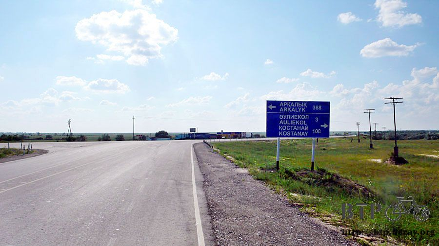
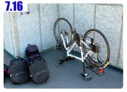

施比受更有福
使用旅館方便的供水，終於能將小多身上的污泥好好的清洗乾淨，從車身和輪胎洗刷下來的泥沙堆積的像座小山丘。
有舒服的床能夠睡覺，都會讓自己放鬆一下，不用一大清早就起床出發。
睡到自然醒之後在旅館附設的餐廳吃了早餐，點了一大壺的奶茶，一共有七杯的份量能喝個夠，配上無限量供應的麵包很好吃。
主菜是大塊的羊肉配上白色寬麵，想吃的鵝肉都點不到，嘆氣。
早餐吃得很豐盛，就連午餐的份一起吃下肚子，十點整出發離開旅館。
昨天的冰雹大雷雨來得快去得也快，在我決定住宿之後的一個小時，雨很快的就停了，瞬間又變回晴朗的好天氣。
看著藍藍的天空配上朵朵白雲，只有地上的積水能夠證明昨天下過大雷雨。
出發時依然維持著好天氣的型態，陽光和煦的照在地面上，風勢依然是由東向西吹的大順風。
晴天加上順風，除了騎車很舒服之外，也能幫忙風乾昨天一口氣洗完但是還沒曬乾的衣服、襪子。
今天騎車很順利，可是也沒發生什麼大不了的事情，只是單車碼表的里程數一直在增加。
騎乘的距離和當天能寫的遊記內容幾乎沒有正相關，騎了一百公里的路，景色都是綠色海洋般的作物。
真是無話可說的漂亮，但除此之外還真是平淡的一天。
襪子好不容易風乾之後，躲在公車等候站穿襪子，正好有卡車司機停下來修車給我拍到照片。
這就是我之前說過，哈薩克很多司機都是熱到只穿一件內褲在開車，也直接穿著一條內褲就進商店買東西或是加油。
這一條還算不錯，是四角褲，看到那種穿緊身三角褲的人四處遊走，真是令人臉上三條線。
其實我也好想脫得剩一條內褲騎車，但是不用幾個小時就會整個人曬到脫皮中暑了。
從離開旅館開始，就沒看過其它的城鎮，中間想停下來吃飯休息也沒辦法。
早餐真的是連午餐一起吃，因為午餐沒得吃。
下午三點餓到兩眼發直，翻著包包尋找填肚子的東西，零食買了之後就往包包裡塞，究竟買了些什麼東西很快就會忘記。
翻到一條巧克力蛋糕時，整個人超級開心的，像挖到寶一樣，配著開水愉快的吃著蛋糕。
蛋糕吃完的時候水也就喝完了，今天的路實在空曠到令人無力，完全出乎我的意料之外，以為沿路可以補給，但是卻什麼都沒有。
早知道這樣的話，出發前我就會多帶一瓶水在身上，才不會像現在這樣水壺見底可是前方依舊路遙遙。
路上有些告示牌說左轉或是右轉多少公里就會有城鎮，少則十幾公里，多則近百公里，想去碰碰運氣也怕只是多繞路的。
而且這些通往其它地方的路都不是很好騎，好不容易回到平坦的路上，要再離開真令人捨不得。
終於發現一個距離馬路邊只有一公里的小鎮，眼前只有低矮的幾棟房子，騎過去向一位老人問看看有沒有商店。
結果就被帶回他家去，叫出家裡的媽媽，說有台灣的單車旅行者要來買東西，媽媽看到我，又叫出家裡的女兒，
然後家裡的哥哥和小朋友，隔壁的鄰居以及養的小狗全部都過來了，買東西之前要先被參觀一下台灣人長的是什麼樣子。

媽媽帶我到房子裡面，與其說是商店不如說是他們家的糧食櫃子，賣的東西很少，我需要的只有喝的東西，媽媽拿出一瓶汽水。
看瓶身是奇怪牌子的可樂，一瓶就有一點五公升，我跟媽媽拿了兩瓶，付錢時聽不懂多少錢，
所以我就先拿一張兩百元給媽媽，然後抓一把零錢在手上，請媽媽自己將剩下的差額補齊。
媽媽將兩百元紙鈔還給我，然後從手上拿走一個一百元的硬幣。
是不是這麼便宜？兩瓶一點五公升裝的大可樂才一百元？
坐在家門口的陰涼處休息一下，這瓶奇怪的可樂真的很奇怪，開瓶的時候氣若游絲的噴氣聲證明它其確是可樂，但已經快沒氣了。
喝起來的口感比較像是甜甜的化學藥劑，或是煮開過的可樂在露水中擱上一夜之後的樣子。
只是口渴的時候，這東西還真是好喝，上述這些抱怨的文字是我之後喝第二瓶時已經沒那麼渴，才在那邊嫌東嫌西。
這是他們家的腳踏車，年紀最大的就是哥哥，叫做馬克樹，家裡有兩個小朋友，一男一女都很可愛，則是他的弟妹。
光喝可樂有點空虛，從包包裡翻出一包餅乾拆來吃，除了自己吃之外也分小朋友一人兩塊。
一起吃著餅乾，和家裡的人聊天，我這一包餅乾吃完之後，家裡的哥哥從屋裡拿出了一大包的餅乾，當成禮物送給我。
空空的水壺也在這邊裝滿了冰涼的水，本來只是想碰個運氣找看看有沒有商店，結果又得到好心人的幫助。
媽媽則問我肚子餓不餓，要不要進屋裡吃飯？
我摸著肚子表示吃餅乾和喝可樂就很飽了，已經收下一大袋的餅乾，怎麼好意思再白吃人家的飯。
媽媽問我騎車旅行晚上都睡哪邊？我說搭帳篷或是住旅館都有。
聊到這裡，其實要是我現在開口說今天能不能住在這邊，我想被留下來的機會幾乎是肯定的。
瞧哥哥盯著小多看的眼光，就知道他很想騎看看，卸下包包之後又是另一次的試騎大會。
但這一次是歐吉桑的版本，鎮上的大叔們都來騎小多，心裡惡趣味的想說應該去找一張『限乘辣妹』的貼紙來貼。
(謎之音：這樣你自己也別想騎小多。)
要走的時候，媽媽又從屋裡拿出一大瓶的可樂說要送給我。
都已經兩瓶才賣一百塊這麼便宜了，還買二送一，整個也太虧本了吧。
我說水壺已經在這裡裝滿水，可樂也還有一大瓶，所以這一瓶我就心領了，再說行李也裝不下。
付出一點點的餅乾分小朋友吃，所得到的回報不能用倍數這麼簡單來計算，得到人家的幫助我都默默記在心裡。
施比受更有福，願幫助我的人都能有更好的福報。
離開之後騎沒多遠，看到了新的告示牌，除了標示出我要去的科斯塔奈之外，連邊境城市也標出來了。
目前距離國界還有兩百七十公里，俄羅斯跟哈薩克的國界是二十四小時開放，包含六、日，所以簽證生效的當天就可以去試著通關了。
這點距離大概三天就能騎到，但是要等到星期六才能通關，所以在哈薩克會有兩天的休息時間能好好恢復體力，準備進行俄羅斯之旅。
這邊要右轉向北走，有點難過，轉彎之前本來吹的是順風，接下來就變成側風，不能享受飆車的快感了。

六點的時候吃了晚餐，沒看到旅館的影子，打算吃飽之後繼續騎下去，直到找到旅館或是沒力為止。
晚餐吃漢堡肉配馬鈴薯泥，簡單又好吃，而且很便宜，雖然沒點奶茶但依然附贈麵包。
在餐廳門口和負責炭烤的員工打聽住宿的情報，得知天大的好消息，再往下走五公里就會有旅館。
五公里這種近到不行的距離根本不算什麼，只是越靠近科斯塔奈這樣的大城市，住宿費用也會水漲船高吧。
昨天住一千五百元一晚上已經很心痛，今天不知道要索價多少？
反正去問問看，覺得OK就住下，嫌貴就閃人，沒什麼大不了的。
五公里之後真的看見旅館的牌子，在農田之中，這個鎮很漂亮，周圍都是大大小小的湖泊，住在這裡感覺很幸福。
旅館看起來位置很偏僻，但也是建在湖畔，直覺這邊是郊區的觀光旅館，給賞湖的人住的那種。
外觀看起來還挺像樣的，一整排的窗戶表示這裡有很多的房間，一樓是大餐廳和酒吧，供客人吃喝。
我最關心的住宿價錢，在旅館的媽媽看到小多之後直直的落下，最後只跟我收七百元就讓我住在這裡。
窗戶外面就是美不勝收的湖景，旅館的設備也很好，房間裡有電風扇，這樣衣服就不會曬不乾，當然還有熱水淋浴、室內廁所。
(沒住過那種半夜想上廁所，要去外面走一百公尺才有辦法拉屎，是不會了解室內廁所的方便性和重要性)
雖然晚餐才吃過漢堡薯泥，但今天加上住宿的開銷都還沒超過一千五百元，實在太省了，晚上又在樓下吃了一頓。
點了好久沒吃的新鮮蔬菜沙拉、再搭配兩串豪爽的烤羊肉串。
喝酒不好，酒精會讓本來很友善的哈薩克人變的不可愛，這個情形是在中國所沒有遇到的。
為了表示抗議，在哈薩克旅行期間抵制酒精，一律喝奶茶。
繼續閱讀：7.16 小多，撐著點

哈薩克-堅戈－ 1：0.26 台幣
7.15 |
總計：2050元 |
早餐一壺奶茶、羊肉麵420元、兩瓶奇怪可樂100元、晚餐漢堡薯泥130元、旅館700元、加菜烤羊肉串、新鮮沙拉、奶茶700元 |
|